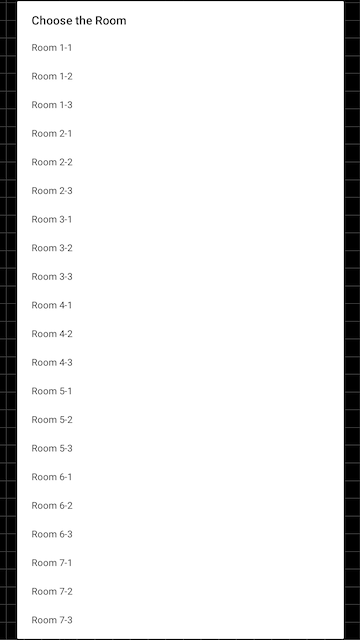
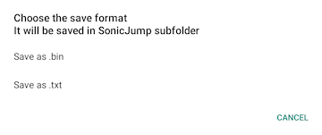

This is the page where you can check the online stages and learn how to use the Map Editor.
Click on the button down below to quit the game website and check the different game maps.

BEANSTALK ZONE:
Created by: Furrican and GdGohan
Beanstalk Zone is a set of 3 stages specifically designed to showcase the capabilities of the map editor and innovative stage layouts.
BASICS:
The Map Editor is a feature that allows you to check the different game maps and even modify them to test them out!
When entering the Map Editor, you will see the top layout of the first stage. You can check the stage layout by sliding or zooming the stage canvas.
MENUS & OPTIONS:
At the top of the screen is a selection of menus and options. You can find the different usage of each option by checking the different sections of this page.
The PLAY MAP, SAVE MAP and LOAD MAP options are explained in the Map Files section.
MUSIC:
The MUSIC CONTROLS menu is where you can select a custom music for your stages.
First, you need to select a music by going through a library of soundtracks. Select your preferred music and it will be played in the background of the editor.
When the music is played, you can turn it off by pressing Pause/Resume Music.
Finally, to use the selected music to be played in your stage, you need to check the Custom Music option in the CONFIG menu.
You can also listen to music by pressing the AMBIENT MUSIC option.
SELECT ROOM:
The stages in the editor are named rooms. There are 21 rooms in total in the game to check and modify.
DISCLAMER: Changing rooms makes you lose your stage layout modifications. Make sure to save and load your map before changing rooms to keep your modifications.
Here are the zones that the rooms represent:
CONFIG MENU:
The CONFIG menu is where you can configure additional stage settings.
DISCLAMER: The CONFIG menu doesn't track all configured settings after saving. Meaning that to make an additional modification, you have to configure all settings again.
Here are the different settings available:
ADDITIONAL OPTIONS:
The black/colored box on the top-right side of the screen is actually an option. It allows you to change the color of the stage canvas.
The RESET MAP option allows you to reset the stage layout. You can bring the stage layout back by selecting the same stage room in the SELECT ROOM menu.
GLITCHES AND OTHER PROBLEMS:
If you encounter glitches or other problems in the Map Editor, some of your answers can be found in the Q&A Page.
DESCRIPTION:
In the Map Editor, the stage layouts are represented by objects. Each object has its type number and coordinates.
The coordinates are represented by the X and Y positions. The X position can go from between 0 to 15 from left to right, whereas the Y position can go from from 0 to 65535 from top to bottom.
When selecting an empty space, you will be granted with a list of object types. You can also select a placed object to change its type or remove it.
Some object placements are determined by gray sprites next to the visual object sprite to illustrate the accurate in-game object postions.
OBJECT TYPES LIST:
STARTING POINT:
The starting point of the stage is determined by the lowest basic platform placed (Type 0). Any other objects placed below won't be present in the stage.
If you place multiple basic platforms at the lowest, the starting point will be the platform placed to the right. There is no other way to change the starting point position.

CHECKPOINTS:
Checkpoints must be placed in a specific way to work correctly. Here are the instructions on how to use them:
GOAL POST:
The goal post is a necessary object type to clear a stage. It serves multiple purpose depending on the stage.
In ACT 1 and 2 stages, the goal post represents the end of the stage. Reach the height of the goal post to clear the stage.

In ACT 3 stages, the goal post makes you ascend until a certain height. The goal post is necessary to make Dr. Eggman appear.
Dr. Eggman is located at the highest position of the stage. He must be defeated to clear the stage.
You can add multiple goal posts to make you ascend even more, but doing so will make Dr. Eggman behave faster each time.
SAVE MAP:
When pressing SAVE MAP for the first time, you have to select a folder to determine the SonicJump subfolder directory, where your modified map files will be saved.
After selecting a folder directory, pressing SAVE MAP will ask you save your map as a .bin or .txt file.
The map.bin file is used if you want to save your map without any extra settings. This format takes less space.
The decoded_map.txt file is used if you want to add additional features in the stages such as custom music and graphics.
The map files don't overwrite, so anytime you save a map file, it creates another one. So make sure to track down your progress.
LOAD MAP:
Anytime you enter the Map Editor, it loads the regular game map by default. If you want to check your map, you have to load it.
To load your progress, press the LOAD MAP option and search for a .bin or .txt file located in the SonicJump subfolder. This folder is most probably located in the Download folder of your internal device.
PLAY MAP:
After loading or saving your map, you can play and test it by pressing PLAY MAP. This option will bring you to the stage select menu.
Select the corresponding stage to play your modified stage.
For example: if you have made your own stage in Room 1-1, you have to select the first stage of the game to play it.
PUBLISHING YOUR MAP:
If you want to publish your map in the Online Stages page, you need create a new issue in the GitHub repository.
The steps to publish your map are as followed: